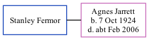

Stanley Fermor, the husband of Agnes Kathleen L Jarrett (the fourth cousin on the mother's side of Nigel Horne), and married Agnes in Tonbridge, Kent, England around Aug 19461.
Citations
England & Wales Marriages 1837-2005 - Findmypast
Family Tree

Generated by ged2site. Last updated on Nov 13, 2024